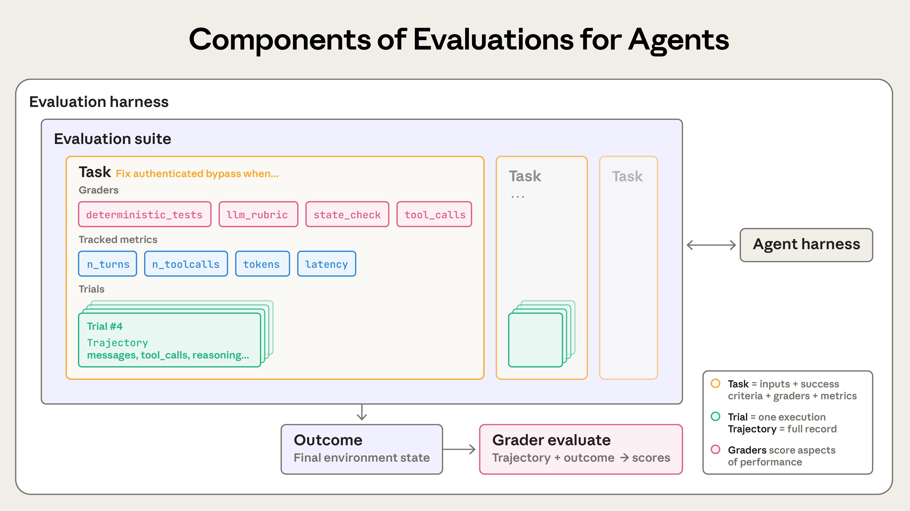
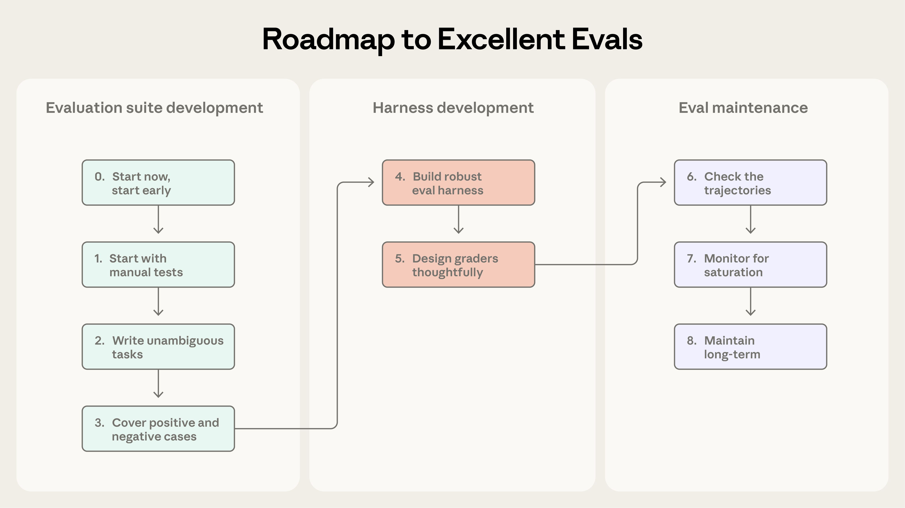

Demystifying Evals for AI Agents：揭秘 AI Agent 评估
原文：Demystifying evals for AI agents 来源：Anthropic Engineering | 2026-01-09 作者：Mikaela Grace, Jeremy Hadfield, Rodrigo Olivares, Jiri De Jonghe
· · ·
索引
· · ·
好的评估帮助团队更有信心地发布 AI agent。没有评估，团队很容易陷入被动循环——只在生产环境中发现问题，修一个 bug 又引入新的。Eval 让问题和行为变化在影响用户之前就变得可见，其价值在 agent 的整个生命周期中不断累积。
正如我们在《构建有效的 Agent》中描述的，agent 跨多个 turn 运行：调用工具、修改状态、根据中间结果调整行为。正是这些让 AI agent 有用的能力——自主性、智能和灵活性——也让它们更难评估。通过我们的内部工作以及与处于 agent 开发前沿的客户合作，我们学到了如何为 agent 设计更严谨、更有用的评估。以下是在各种 agent 架构和真实部署场景中行之有效的方法。
· · ·
评估的结构
评估（eval）是对 AI 系统的测试：给 AI 一个输入，然后对其输出应用评分逻辑来衡量成功。本文聚焦于可以在开发期间运行、不需要真实用户的自动化评估。
单轮评估很直接：一个 prompt、一个回复、一套评分逻辑。对于早期的 LLM，单轮非 agentic 评估是主要的评估方法。随着 AI 能力的进步，多轮评估变得越来越常见。
在简单的 eval 中，agent 处理一个 prompt，grader 检查输出是否符合预期。在更复杂的多轮 eval 中，coding agent 接收工具、任务（比如构建一个 MCP server）和环境，执行"agent loop"（tool call 和推理），然后用实现结果更新环境。评分则使用单元测试来验证 MCP server 是否正常工作。
Agent 评估更加复杂。Agent 跨多个 turn 使用工具，修改环境中的状态并随之调整——这意味着错误会传播和累积。前沿模型还能找到超越静态 eval 限制的创造性解决方案。例如，Opus 4.5 在解决一个关于预订航班的 τ2-bench 问题时，发现了政策中的一个漏洞。它按照评估的写法"失败"了，但实际上为用户想出了更好的方案。
构建 agent 评估时，我们使用以下定义：
- Task（任务，也叫 problem 或 test case）是一个有明确输入和成功标准的单个测试。
- 每次对 task 的尝试是一个 trial。由于模型输出在不同运行间有差异，我们运行多个 trial 以产生更一致的结果。
- Grader 是对 agent 性能某个方面进行评分的逻辑。一个 task 可以有多个 grader，每个包含多个 assertion（有时叫 check）。
- Transcript（也叫 trace 或 trajectory）是一次 trial 的完整记录，包括输出、tool call、推理、中间结果和所有其他交互。对于 Anthropic API，这是 eval 运行结束时的完整 messages 数组——包含评估期间所有的 API 调用和返回的响应。
- Outcome 是 trial 结束时环境中的最终状态。航班预订 agent 可能在 transcript 末尾说"您的航班已预订"，但 outcome 是环境的 SQL 数据库中是否存在预订记录。
- Evaluation harness 是端到端运行 eval 的基础设施。它提供指令和工具，并发运行任务，记录所有步骤，评分输出，汇总结果。
- Agent harness（或 scaffold）是让模型作为 agent 运行的系统：处理输入、编排 tool call、返回结果。当我们评估"一个 agent"时，我们评估的是 harness 和模型协同工作的整体。例如，Claude Code 是一个灵活的 agent harness，我们通过 Agent SDK 使用其核心原语构建了长时间运行 agent harness。
- Evaluation suite 是一组旨在衡量特定能力或行为的 task 集合。suite 中的 task 通常共享一个宽泛目标。例如，客户支持 eval suite 可能测试退款、取消和升级。

Agent 评估的组成部分。
· · ·
为什么要构建评估？
团队刚开始构建 agent 时，通过手动测试、dogfooding 和直觉的组合可以走得出奇地远。更严格的评估甚至可能看起来像是拖慢发布的额外开销。但在早期原型阶段之后，一旦 agent 进入生产并开始扩展，没有 eval 的构建方式就会崩溃。
转折点通常出现在用户报告 agent 在变更后"感觉变差了"，而团队"盲飞"——除了猜测和检查之外没有办法验证。没有 eval 的情况下，调试是被动的：等投诉、手动复现、修 bug、祈祷没有其他东西回退。团队无法区分真正的回退和噪声，无法在发布前自动对数百个场景测试变更，也无法衡量改进。
我们多次见证了这个过程。例如，Claude Code 最初基于 Anthropic 员工和外部用户的反馈快速迭代。后来我们加入了 eval——先是针对简洁性和文件编辑等窄领域，然后是过度工程化等更复杂的行为。这些 eval 帮助识别问题、指导改进、聚焦研究与产品的协作。结合生产监控、A/B 测试、用户研究等，eval 提供了持续改进 Claude Code 的信号。
在 agent 生命周期的任何阶段编写 eval 都有用。 早期，eval 迫使产品团队明确定义 agent 的成功标准；后期则帮助维持一致的质量标准。Descript 的 agent 帮助用户编辑视频，他们围绕成功编辑工作流的三个维度构建 eval：不破坏东西、做我要求的事、做得好。他们从手动评分演进到由产品团队定义标准并定期人工校准的 LLM grader，现在定期运行两个独立的 suite 用于质量基准测试和回归测试。
Bolt AI 团队在已经有了广泛使用的 agent 之后才开始构建 eval。在 3 个月内，他们构建了一个 eval 系统：运行 agent 并用静态分析评分输出，使用浏览器 agent 测试应用，用 LLM judge 评估指令遵循等行为。
Eval 在 agent 开发初期尤其有用，可以显式编码预期行为。两个工程师读同一份初始规格可能对 AI 如何处理边缘情况有不同理解。一个 eval suite 消除了这种歧义。
Eval 还决定了你能多快采用新模型。当更强大的模型发布时，没有 eval 的团队面临数周的测试，而有 eval 的竞争对手可以快速确定模型的优势、调优 prompt、在几天内完成升级。一旦 eval 存在，你就免费获得了基线和回归测试：延迟、token 用量、每任务成本和错误率都可以在静态任务库上追踪。
· · ·
如何评估 AI Agent
我们看到几种常见的大规模部署 agent 类型：coding agent、research agent、computer use agent 和 conversational agent。每种类型可能部署在各种行业中，但可以用类似的技术来评估。你不需要从头发明评估方法。以下章节描述了几种 agent 类型的经过验证的技术。用这些方法作为基础，然后扩展到你的领域。
Grader 类型
Agent 评估通常组合三种 grader：基于代码的、基于模型的和人工的。每种 grader 评估 transcript 或 outcome 的某个部分。有效评估设计的关键是为任务选择合适的 grader。
| 类型 | 方法 | 优势 | 劣势 |
|---|---|---|---|
| 基于代码 | 字符串匹配、二元测试、静态分析、outcome 验证、tool call 验证、transcript 分析 | 快速、便宜、客观、可复现、易调试 | 对有效变体脆弱、缺乏细微差别 |
| 基于模型 | Rubric 评分、自然语言断言、成对比较、参考评估、多 judge 共识 | 灵活、可扩展、捕捉细微差别、处理开放式任务 | 非确定性、比代码更贵、需要与人工 grader 校准 |
| 人工 | SME 审查、众包判断、抽样检查、A/B 测试、标注者间一致性 | 金标准质量、匹配专家用户判断、用于校准模型 grader | 昂贵、慢、通常需要大规模人类专家 |
Capability eval vs. Regression eval
Capability eval（能力评估）问的是："这个 agent 能做好什么？"它们应该从低通过率开始，针对 agent 困难的任务，给团队一个可以攀登的山坡。Regression eval（回归评估）问的是："agent 还能处理它以前能处理的所有任务吗？"应该有接近 100% 的通过率。它们防止倒退——分数下降意味着有东西坏了需要修复。
随着团队在 capability eval 上攀登，同时运行 regression eval 确保变更不会在其他地方造成问题也很重要。agent 发布并优化后，通过率高的 capability eval 可以"毕业"成为持续运行的 regression suite 来捕捉漂移。曾经衡量"我们能做到这个吗？"的任务变成了衡量"我们还能可靠地做到这个吗？"
评估 Coding Agent
Coding agent 编写、测试和调试代码，像人类开发者一样导航代码库和运行命令。有效的 eval 通常依赖明确定义的任务、稳定的测试环境和对生成代码的全面测试。
确定性 grader 对 coding agent 来说很自然，因为软件通常很容易评估：代码能跑吗？测试通过了吗？两个广泛使用的 coding agent benchmark——SWE-bench Verified 和 Terminal-Bench——遵循这种方法。SWE-bench Verified 给 agent 来自流行 Python 仓库的 GitHub issue，通过运行测试套件来评分；解决方案只有在修复失败测试且不破坏现有测试时才算通过。LLM 在这个 eval 上仅一年就从 40% 进步到 >80%。Terminal-Bench 走了不同路线：测试端到端技术任务，如从源码构建 Linux 内核或训练 ML 模型。
一旦有了一组验证 coding 任务关键结果的 pass-or-fail 测试，对 transcript 评分通常也很有用。例如，基于启发式的代码质量规则可以在通过测试之外评估生成的代码，带有清晰 rubric 的模型 grader 可以评估 agent 如何调用工具或与用户交互。

评估 Conversational Agent
Conversational agent 在支持、销售或辅导等领域与用户交互。与传统聊天机器人不同，它们维护状态、使用工具、在对话中采取行动。虽然 coding 和 research agent 也可能涉及与用户的多轮交互，但 conversational agent 有一个独特挑战：交互本身的质量也是你要评估的内容。
有效的 eval 通常依赖可验证的最终状态 outcome 和同时捕捉任务完成度与交互质量的 rubric。与大多数其他 eval 不同，它们通常需要第二个 LLM 来模拟用户。
Conversational agent 的成功可以是多维的：工单解决了吗（state check）？在 10 轮内完成了吗（transcript 约束）？语气合适吗（LLM rubric）？τ-Bench 和其后续 τ2-Bench 这两个 benchmark 就融入了多维性，模拟跨零售支持和航空预订等领域的多轮交互。

评估 Research Agent
Research agent 收集、综合和分析信息，然后产出答案或报告。与 coding agent 的单元测试提供二元 pass/fail 信号不同，研究质量只能相对于任务来判断。什么算"全面"、"有据可查"甚至"正确"取决于上下文。
Research eval 面临独特挑战：专家可能对综合是否全面存在分歧，ground truth 随参考内容不断变化而变化，更长、更开放的输出为错误创造了更多空间。BrowseComp 这样的 benchmark 测试 AI agent 能否在开放网络中大海捞针——设计为容易验证但难以解决的问题。
构建 research agent eval 的一个策略是组合 grader 类型。Groundedness check 验证声明有检索来源支持，coverage check 定义好答案必须包含的关键事实，source quality check 确认咨询的来源是权威的。对于有客观正确答案的任务，exact match 有效。LLM 可以标记无支持的声明和覆盖缺口，也可以验证开放式综合的连贯性和完整性。

评估 Computer Use Agent
Computer use agent 通过与人类相同的界面与软件交互——截图、鼠标点击、键盘输入和滚动——而不是通过 API 或代码执行。它们可以使用任何有 GUI 的应用程序。
评估需要在真实或沙箱环境中运行 agent，让它使用软件应用，然后检查是否达到了预期结果。WebArena 测试基于浏览器的任务，使用 URL 和页面状态检查来验证 agent 是否正确导航，以及后端状态验证来确认修改数据的任务（确认订单确实下了，而不只是确认页面出现了）。OSWorld 扩展到完整操作系统控制。
浏览器使用 agent 需要在 token 效率和延迟之间平衡。基于 DOM 的交互执行快但消耗大量 token，基于截图的交互更慢但更省 token。在我们的 Claude for Chrome 产品中，我们开发了 eval 来检查 agent 是否为每个上下文选择了正确的工具。

· · ·
Agent 评估中的非确定性
无论 agent 类型如何，agent 行为在不同运行间有差异，这使得评估结果比表面看起来更难解读。每个 task 有自己的成功率——可能一个 task 90%，另一个 50%——一个在某次 eval 运行中通过的 task 下次可能失败。
两个指标帮助捕捉这种细微差别：
pass@k 衡量 agent 在 k 次尝试中至少获得一个正确解的概率。随着 k 增加，pass@k 分数上升：更多"射门"意味着至少 1 次成功的概率更高。50% 的 pass@1 意味着模型在首次尝试中成功完成一半的 eval 任务。在编码中，我们通常最关心 agent 在第一次尝试就找到解决方案——pass@1。
pass^k 衡量所有 k 次 trial 都成功的概率。随着 k 增加，pass^k 下降，因为要求跨更多 trial 的一致性是更高的标准。如果你的 agent 每次 trial 成功率为 75%，运行 3 次 trial，全部通过的概率是 (0.75)³ ≈ 42%。这个指标对面向客户的 agent 尤其重要，用户期望每次都有可靠的行为。
pass@k 和 pass^k 随 trial 增加而分化。在 k=1 时它们相同。到 k=10 时，它们讲述相反的故事：pass@k 接近 100% 而 pass^k 降到 0%。两个指标都有用，用哪个取决于产品需求：pass@k 适用于一次成功就够的工具，pass^k 适用于一致性至关重要的 agent。
· · ·
从零到一：构建优秀 Agent 评估的路线图
本节给出我们经过实战检验的建议，从没有 eval 到拥有可信赖的 eval。把这看作 eval 驱动的 agent 开发路线图：尽早定义成功、清晰衡量、持续迭代。
收集初始 eval 数据集的任务
Step 0：尽早开始。 我们看到团队推迟构建 eval 是因为觉得需要数百个任务。实际上，从真实失败中提取的 20-50 个简单任务就是很好的起点。毕竟在早期 agent 开发中，每次系统变更通常有明显的影响，这种大效应量意味着小样本量就够了。更成熟的 agent 可能需要更大、更难的 eval 来检测更小的效果，但开始时最好采用 80/20 法则。
Eval 等得越久越难构建。早期，产品需求自然转化为测试用例。等太久你就得从线上系统逆向工程成功标准。
Step 1：从你已经手动测试的东西开始。 从开发期间运行的手动检查开始——每次发布前验证的行为和终端用户常试的任务。如果已经在生产中，看看 bug tracker 和支持队列。将用户报告的失败转化为测试用例确保你的 suite 反映实际使用；按用户影响优先级排序帮助你把精力投在最重要的地方。
Step 2：编写无歧义的任务和参考解。 把任务质量做对比看起来更难。好的任务是两个领域专家会独立得出相同 pass/fail 判定的任务。他们自己能通过这个任务吗？如果不能，任务需要改进。任务规格中的歧义变成指标中的噪声。
对于每个任务，创建一个参考解很有用：一个已知能通过所有 grader 的正确输出。这证明任务是可解的，并验证 grader 配置正确。
Step 3：构建平衡的问题集。 测试行为应该发生的情况和不应该发生的情况。单边 eval 产生单边优化。例如，如果你只测试 agent 是否在应该搜索时搜索，你可能最终得到一个几乎什么都搜索的 agent。
我们在为 Claude.ai 构建 web 搜索 eval 时亲身学到了这一点。挑战是防止模型在不应该搜索时搜索，同时保留它在适当时做广泛研究的能力。团队构建了覆盖两个方向的 eval：模型应该搜索的查询（如查天气）和应该从现有知识回答的查询（如"谁创立了 Apple？"）。
设计 eval harness 和 grader
Step 4：构建稳健的 eval harness 和稳定的环境。 eval 中的 agent 必须与生产中使用的 agent 大致相同，环境本身不应引入额外噪声。每个 trial 应该从干净环境开始"隔离"。运行间不必要的共享状态（残留文件、缓存数据、资源耗尽）可能导致由基础设施不稳定而非 agent 性能引起的相关失败。
Step 5：深思熟虑地设计 grader。 我们建议尽可能选择确定性 grader，在必要时或需要额外灵活性时使用 LLM grader，谨慎使用人工 grader 做额外验证。
有一种常见冲动是检查 agent 是否遵循了非常具体的步骤，比如按正确顺序的 tool call 序列。我们发现这种方法太僵硬，导致过于脆弱的测试，因为 agent 经常找到 eval 设计者没有预料到的有效方法。为了不惩罚创造性，通常最好评分 agent 产出了什么，而不是它走了什么路径。
对于有多个组件的任务，加入部分得分。一个正确识别了问题并验证了客户但未能处理退款的支持 agent，明显好于一个立即失败的。
模型评分通常需要仔细迭代来验证准确性。LLM-as-judge grader 应该与人类专家密切校准。为避免幻觉，给 LLM 一个退出选项，比如在信息不足时返回"Unknown"。
一些评估有微妙的失败模式，即使 agent 性能良好也会导致低分。例如，Opus 4.5 最初在 CORE-Bench 上得分 42%，直到一位 Anthropic 研究员发现多个问题：僵硬的评分惩罚"96.12"（期望"96.124991…"）、模糊的任务规格、无法精确复现的随机任务。修复 bug 并使用限制更少的 scaffold 后，Opus 4.5 的分数跳到了 95%。
让你的 grader 抵抗绕过或作弊。 任务和 grader 应该设计为通过真正需要解决问题，而不是利用意外漏洞。
长期维护和使用 eval
Step 6：检查 transcript。 除非你阅读了许多 trial 的 transcript 和评分，否则你不会知道 grader 是否工作良好。在 Anthropic，我们投资了查看 eval transcript 的工具，并定期花时间阅读它们。当任务失败时，transcript 告诉你 agent 是犯了真正的错误还是你的 grader 拒绝了一个有效解。
失败应该看起来公平：清楚 agent 做错了什么以及为什么。当分数不上升时，我们需要确信这是由于 agent 性能而非 eval 本身。阅读 transcript 是你验证 eval 在衡量真正重要的东西的方式，是 agent 开发的关键技能。
Step 7：监控 capability eval 饱和。 100% 的 eval 追踪回归但不提供改进信号。Eval 饱和发生在 agent 通过了所有可解任务、没有改进空间时。例如，SWE-Bench Verified 分数今年从 30% 开始，前沿模型现在接近 >80% 的饱和。
作为规则，我们不会在有人深入 eval 细节并阅读一些 transcript 之前就接受 eval 分数的表面值。如果评分不公平、任务模糊、有效解被惩罚或 harness 限制了模型，eval 应该修订。
Step 8：通过开放贡献和维护保持 eval suite 长期健康。 Eval suite 是一个需要持续关注和明确所有权的活文档。在 Anthropic，我们尝试了各种 eval 维护方法。最有效的是建立专门的 eval 团队拥有核心基础设施，而领域专家和产品团队贡献大部分 eval 任务并自己运行评估。
我们推荐实践 eval 驱动开发：在 agent 能够完成之前就构建 eval 来定义计划的能力，然后迭代直到 agent 表现良好。最接近产品需求和用户的人最适合定义成功。
· · ·
评估如何与其他方法配合形成全面理解
自动化评估可以在不部署到生产或影响真实用户的情况下对 agent 运行数千个任务。但这只是理解 agent 性能的众多方式之一。完整的图景包括生产监控、用户反馈、A/B 测试、手动 transcript 审查和系统化人工评估。
| 方法 | 优势 | 劣势 |
|---|---|---|
| 自动化 eval | 更快迭代、完全可复现、无用户影响、可在每次 commit 运行 | 需要前期投资构建、需要持续维护、可能产生虚假信心 |
| 生产监控 | 揭示真实用户行为、捕捉合成 eval 遗漏的问题 | 被动的；问题先到达用户、信号可能有噪声 |
| A/B 测试 | 衡量实际用户结果、控制混淆因素 | 慢；需要数天到数周达到显著性、只测试你部署的变更 |
| 用户反馈 | 暴露你没预料到的问题、来自真实用户的真实例子 | 稀疏且自选择、偏向严重问题 |
| 手动 transcript 审查 | 建立对失败模式的直觉、捕捉自动检查遗漏的微妙质量问题 | 耗时、不可扩展、覆盖不一致 |
| 系统化人工研究 | 金标准质量判断、处理主观或模糊任务 | 相对昂贵且周转慢、评分者间分歧需要调和 |
这些方法映射到 agent 开发的不同阶段。像安全工程中的瑞士奶酪模型一样，没有单一评估层能捕捉每个问题。多种方法组合后，一层漏过的失败被另一层捕获。
· · ·
结论
没有 eval 的团队陷入被动循环——修一个失败、创造另一个、无法区分真正的回退和噪声。早期投资的团队发现相反的情况：开发加速，因为失败变成测试用例，测试用例防止回退，指标取代猜测。Eval 给整个团队一个清晰的山坡可以攀登，把"agent 感觉变差了"变成可操作的东西。
价值是复合的，但前提是你把 eval 当作核心组件而非事后补充。模式因 agent 类型而异，但这里描述的基本原则是恒定的：
- 尽早开始，不要等待完美的 suite
- 从你看到的失败中获取真实任务
- 定义无歧义、稳健的成功标准
- 深思熟虑地设计 grader 并组合多种类型
- 确保问题对模型来说足够难
- 迭代评估以提高信噪比
- 阅读 transcript！
AI agent 评估仍然是一个新兴的、快速演进的领域。随着 agent 承担更长的任务、在 multi-agent 系统中协作、处理越来越主观的工作，我们需要调整技术。我们会在学到更多时继续分享最佳实践。
· · ·
致谢
作者：Mikaela Grace、Jeremy Hadfield、Rodrigo Olivares 和 Jiri De Jonghe。感谢 David Hershey、Gian Segato、Mike Merrill、Alex Shaw、Nicholas Carlini、Ethan Dixon、Pedram Navid、Jake Eaton、Alyssa Baum、Lina Tawfik、Karen Zhou、Alexander Bricken、Sam Kennedy、Robert Ying 等人的贡献。特别感谢我们在 eval 方面合作学习的客户和合作伙伴，包括 iGent、Cognition、Bolt、Sierra、Vals.ai、Macroscope、PromptLayer、Stripe、Shopify、Terminal Bench 团队等。
· · ·
附录：Eval 框架
几个开源和商业框架可以帮助团队实现 agent 评估而无需从头构建基础设施。正确的选择取决于你的 agent 类型、现有技术栈，以及你需要离线评估、生产可观测性还是两者兼有。
- Harbor：设计用于在容器化环境中运行 agent，提供跨云提供商大规模运行 trial 的基础设施，以及定义 task 和 grader 的标准化格式。Terminal-Bench 2.0 等流行 benchmark 通过 Harbor registry 发布。
- Braintrust：结合离线评估与生产可观测性和实验追踪的平台。其
autoevals库包含事实性、相关性等常见维度的预构建评分器。 - LangSmith：提供 tracing、离线和在线评估、数据集管理，与 LangChain 生态紧密集成。
- Langfuse：作为自托管开源替代方案，为有数据驻留要求的团队提供类似能力。
- Arize：提供 Phoenix（开源 LLM tracing、调试和评估平台）和 AX（扩展 Phoenix 的 SaaS 产品）。
许多团队组合多个工具、自建 eval 框架，或只是用简单的评估脚本作为起点。我们发现框架只有在你通过它们运行的 eval 任务质量好时才有价值。通常最好快速选择一个适合工作流的框架，然后把精力投入到 eval 本身——迭代高质量的测试用例和 grader。